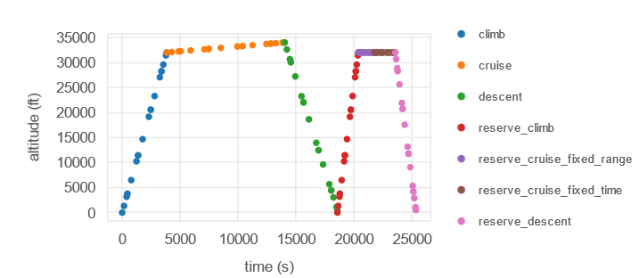
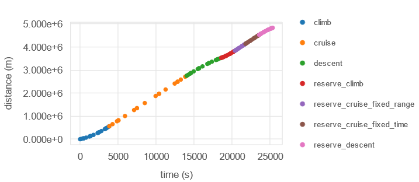
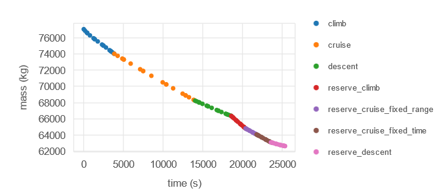
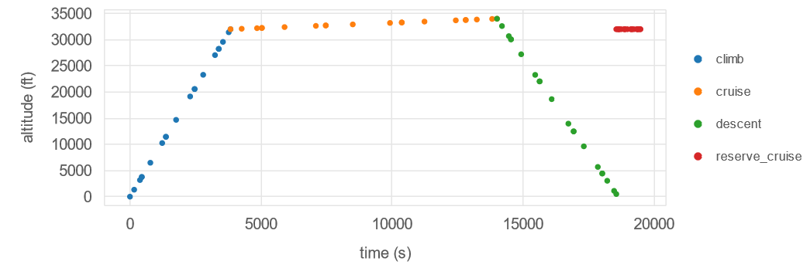

Running a Reserve Mission#
Aviary supports defining a reserve mission as part of your overall design mission profile. Aviary is extremely flexible with reserve mission definition - the only rule is that mission segments that are part of the reserve mission must come at the end of the mission profile. The only difference between mission segments in the reserve mission vs. segments in the “regular” mission is how Aviary bookkeeps some summation variables. For example, total fuel consumption and range are tracked for the regular and reserve missions individually.
Defining Reserve Mission Phases#
A mission segment can be flagged as part of the reserve mission in the phase_info by setting the ‘reserve’ flag in “user_options” to True. The following code adds on a multi-segment reserve mission to the default energy-state phase info to showcase how to set up a couple of common reserve segment types. None of the phase_info settings used to configure these segments are specific to a reserve mission (besides the reserve flag itself), but they are commonly used when defining reserve missions.
import aviary.api as av
from aviary.models.missions.energy_state_default import phase_info
# Add reserve phases to existing phase_info
phase_info.update(
{
'reserve_climb': {
'subsystem_options': {'aerodynamics': {'method': 'computed'}},
'user_options': {
'reserve': True,
'num_segments': 5,
'order': 3,
'mach_optimize': False,
'mach_polynomial_order': 1,
'mach_initial': (0.36, 'unitless'),
'mach_final': (0.72, 'unitless'),
'altitude_optimize': False,
'altitude_polynomial_order': 1,
'altitude_initial': (500.0, 'ft'),
'altitude_final': (32000.0, 'ft'),
'throttle_enforcement': 'path_constraint',
'time_initial': (0.0, 'min'),
'time_duration_bounds': ((30.0, 192.0), 'min'),
},
'initial_guesses': {
'time': ([0, 128], 'min'),
},
},
'reserve_cruise_fixed_range': {
'subsystem_options': {'aerodynamics': {'method': 'computed'}},
'user_options': {
'reserve': True,
# Distance traveled in this phase
'target_distance': (300, 'km'),
'num_segments': 5,
'order': 3,
'mach_optimize': False,
'mach_polynomial_order': 1,
'mach_initial': (0.72, 'unitless'),
'mach_final': (0.72, 'unitless'),
'altitude_optimize': False,
'altitude_polynomial_order': 1,
'altitude_initial': (32000.0, 'ft'),
'altitude_final': (32000.0, 'ft'),
'throttle_enforcement': 'boundary_constraint',
'time_initial_bounds': ((149.5, 448.5), 'min'),
'time_duration_bounds': ((0, 300), 'min'),
},
'initial_guesses': {
'time': ([30, 120], 'min'),
},
},
'reserve_cruise_fixed_time': {
'subsystem_options': {'aerodynamics': {'method': 'computed'}},
'user_options': {
'reserve': True,
# Time length of this phase
'time_duration': (30, 'min'),
'num_segments': 5,
'order': 3,
'distance_solve_segments': False,
'mach_optimize': False,
'mach_polynomial_order': 1,
'mach_initial': (0.72, 'unitless'),
'mach_final': (0.72, 'unitless'),
'altitude_optimize': False,
'altitude_polynomial_order': 1,
'altitude_initial': (32000.0, 'ft'),
'altitude_final': (32000.0, 'ft'),
'throttle_enforcement': 'boundary_constraint',
'time_initial_bounds': ((60, 448.5), 'min'),
},
},
'reserve_descent': {
'subsystem_options': {'aerodynamics': {'method': 'computed'}},
'user_options': {
'reserve': True,
'num_segments': 5,
'order': 3,
'mach_optimize': False,
'mach_polynomial_order': 1,
'mach_initial': (0.72, 'unitless'),
'mach_final': (0.36, 'unitless'),
'altitude_optimize': False,
'altitude_polynomial_order': 1,
'altitude_initial': (32000.0, 'ft'),
'altitude_final': (500.0, 'ft'),
'throttle_enforcement': 'path_constraint',
'time_initial_bounds': ((120.5, 550.0), 'min'),
'time_duration_bounds': ((29.0, 87.0), 'min'),
},
},
}
)
Four unique phases were created as part of this reserve mission. An climb segment, two cruises with different restrictions, and a descent segment. Note how they all have the reserve option set to True. The climb and descent segments are not noteworthy, and are configured very similar to the main mission.
For the first cruise phase, the range is fixed to 300 km. This is done by adding "target_distance": (300, 'km') to that phase’s options.
The second cruise phase is set to a 30 min duration, essentially a loiter segment. This is done by setting the option "time_duration": (30, 'min').
These two options are mutually exclusive - you can’t fix both distance and duration in your mission, or the problem becomes infeasible and can’t be solved.
Now we will run this problem and view the results.
prob = av.run_aviary(
aircraft_data='models/aircraft/advanced_single_aisle/advanced_single_aisle_FLOPS.csv',
phase_info=phase_info,
)
Warning: No input value found for Aircraft.Design.TYPE. Assuming the aircraft is of type: AircraftTypes.TRANSPORT.
Warning: No input value found for Aircraft.HorizontalTail.NUM_TAILS. Assuming there is 1 horizontal tail.
/usr/share/miniconda/envs/test/lib/python3.13/site-packages/openmdao/utils/relevance.py:1296: OpenMDAOWarning:The following groups have a nonlinear solver that computes gradients and will be treated as atomic for the purposes of determining which systems are included in the optimization iteration:
traj.phases.climb.rhs_all.solver_sub
traj.phases.cruise.rhs_all.solver_sub
traj.phases.descent.rhs_all.solver_sub
traj.phases.reserve_climb.rhs_all.solver_sub
traj.phases.reserve_cruise_fixed_range.rhs_all.solver_sub
traj.phases.reserve_cruise_fixed_time.rhs_all.solver_sub
traj.phases.reserve_descent.rhs_all.solver_sub
/usr/share/miniconda/envs/test/lib/python3.13/site-packages/openmdao/solvers/linear/linear_rhs_checker.py:175: SolverWarning:DirectSolver in 'traj.phases.climb.indep_states' <class StateIndependentsComp>: 'rhs_checking' is active but no redundant adjoint dependencies were found, so caching has been disabled.
/usr/share/miniconda/envs/test/lib/python3.13/site-packages/openmdao/solvers/linear/linear_rhs_checker.py:175: SolverWarning:DirectSolver in 'traj.phases.cruise.indep_states' <class StateIndependentsComp>: 'rhs_checking' is active but no redundant adjoint dependencies were found, so caching has been disabled.
/usr/share/miniconda/envs/test/lib/python3.13/site-packages/openmdao/solvers/linear/linear_rhs_checker.py:175: SolverWarning:DirectSolver in 'traj.phases.descent.indep_states' <class StateIndependentsComp>: 'rhs_checking' is active but no redundant adjoint dependencies were found, so caching has been disabled.
/usr/share/miniconda/envs/test/lib/python3.13/site-packages/openmdao/solvers/linear/linear_rhs_checker.py:175: SolverWarning:DirectSolver in 'traj.phases.reserve_climb.indep_states' <class StateIndependentsComp>: 'rhs_checking' is active but no redundant adjoint dependencies were found, so caching has been disabled.
/usr/share/miniconda/envs/test/lib/python3.13/site-packages/openmdao/solvers/linear/linear_rhs_checker.py:175: SolverWarning:DirectSolver in 'traj.phases.reserve_cruise_fixed_range.indep_states' <class StateIndependentsComp>: 'rhs_checking' is active but no redundant adjoint dependencies were found, so caching has been disabled.
/usr/share/miniconda/envs/test/lib/python3.13/site-packages/openmdao/solvers/linear/linear_rhs_checker.py:175: SolverWarning:DirectSolver in 'traj.phases.reserve_cruise_fixed_time.indep_states' <class StateIndependentsComp>: 'rhs_checking' is active but no redundant adjoint dependencies were found, so caching has been disabled.
/usr/share/miniconda/envs/test/lib/python3.13/site-packages/openmdao/solvers/linear/linear_rhs_checker.py:175: SolverWarning:DirectSolver in 'traj.phases.reserve_descent.indep_states' <class StateIndependentsComp>: 'rhs_checking' is active but no redundant adjoint dependencies were found, so caching has been disabled.
Total number of variables............................: 219
variables with only lower bounds: 213
variables with lower and upper bounds: 6
variables with only upper bounds: 0
Total number of equality constraints.................: 215
Total number of inequality constraints...............: 105
inequality constraints with only lower bounds: 1
inequality constraints with lower and upper bounds: 104
inequality constraints with only upper bounds: 0
Number of Iterations....: 22
(scaled) (unscaled)
Objective...............: 1.9306787138604415e+00 1.9306787138604415e+00
Dual infeasibility......: 3.9475051307850049e-08 3.9475051307850049e-08
Constraint violation....: 1.9234907254300304e-11 1.9234907254300304e-11
Variable bound violation: 0.0000000000000000e+00 0.0000000000000000e+00
Complementarity.........: 9.0961722989363786e-08 9.0961722989363786e-08
Overall NLP error.......: 9.0961722989363786e-08 9.0961722989363786e-08
Number of objective function evaluations = 27
Number of objective gradient evaluations = 19
Number of equality constraint evaluations = 27
Number of inequality constraint evaluations = 27
Number of equality constraint Jacobian evaluations = 24
Number of inequality constraint Jacobian evaluations = 24
Number of Lagrangian Hessian evaluations = 0
Total seconds in IPOPT = 17.779
EXIT: Optimal Solution Found.
Optimization Problem -- Optimization using pyOpt_sparse
================================================================================
Objective Function: _objfunc
Objectives
Index Name Value
0 mission:objectives:fuel 1.930679E+00
Variables (c - continuous, i - integer, d - discrete)
Index Name Type Lower Bound Value Upper Bound Status
2 traj.climb.t_duration_0 c 5.000000E-01 5.000006E-01 1.500000E+00 l
96 traj.reserve_climb.t_duration_0 c 2.702703E-01 2.702704E-01 1.729730E+00 l
Constraints (i - inequality, e - equality)
Index Name Type Lower Value Upper Status Lagrange Multiplier (N/A)
275 traj.descent.throttle[path] i 0.000000E+00 5.110341E-07 1.000000E+00 l 9.00000E+100
319 traj.reserve_descent.throttle[path] i 0.000000E+00 1.452069E-07 1.000000E+00 l 9.00000E+100
The mission profile from this mission is shown below - this plot can also be viewed when using the dashboard.

The reserve mission can be clearly seen following the regular mission. There are two distinct cruise segments visible within the reserve mission, which are our fixed-distance and fixed-duration cruises.
We can also take a look at the plots of distance and mass vs. time to verify that the reserve mission directly connects to the main mission without any discontinuities.


Discontinuous Reserve Missions#
It is possible to define a reserve mission that does not directly connect to the main mission. This may be desired for a variety of reasons, and is easily accomplished. For example, if you removed the climb, fixed-duration cruise, and descent segments from the multiphase reserve mission previously defined (leaving only the fixed-range cruise), you can generate a discontinuous mission trajectory that looks like the following:
